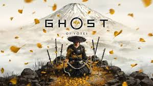

"Ghost of Tsushima" é um jogo de ação e aventura desenvolvido pela Sucker Punch Productions e lançado em julho de 2020 para PlayStation 4. O jogo é ambientado no Japão feudal, durante a invasão mongol à ilha de Tsushima no século XIII.
O jogador assume o papel de Jin Sakai, um samurai que luta para proteger sua terra e seu povo da invasão mongol. Após um ataque devastador que resulta na morte de muitos samurais, Jin deve adaptar suas técnicas de combate e se transformar no "Fantasma" para enfrentar os invasores de maneira eficaz. O jogo explora temas como honra, sacrifício e a luta entre tradições e novas abordagens na guerra.
| marcosaureio@gmailcom | josealcantra@gmailcom | jose@gmail.com |
|---|---|---|
| @aafonso.wx | @playstation | @ubsoft |